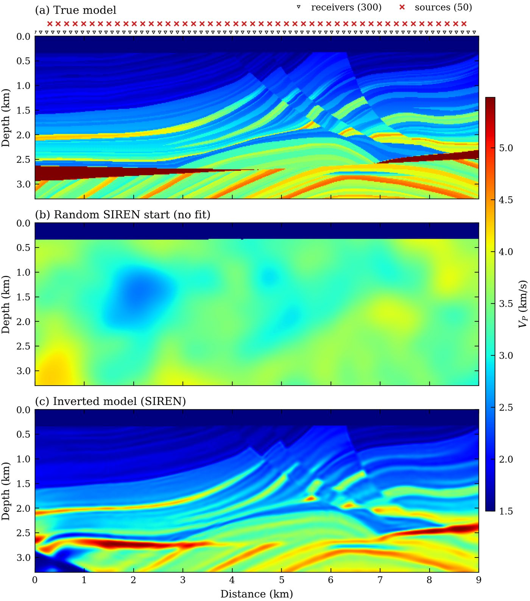
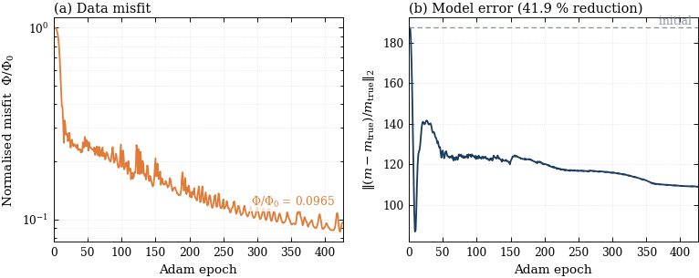
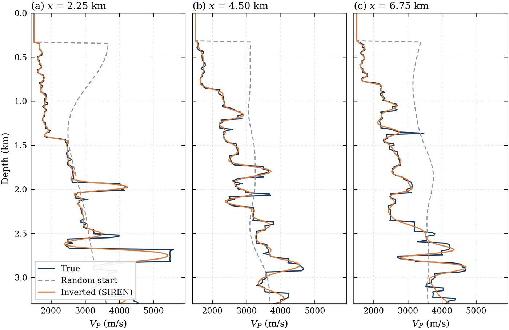
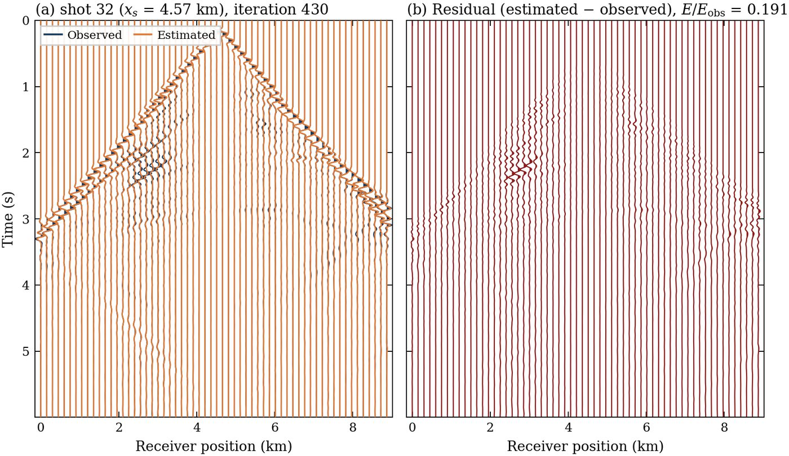
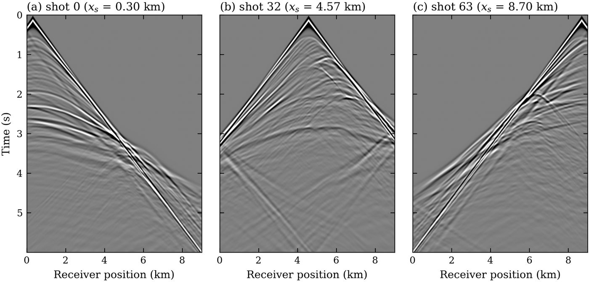
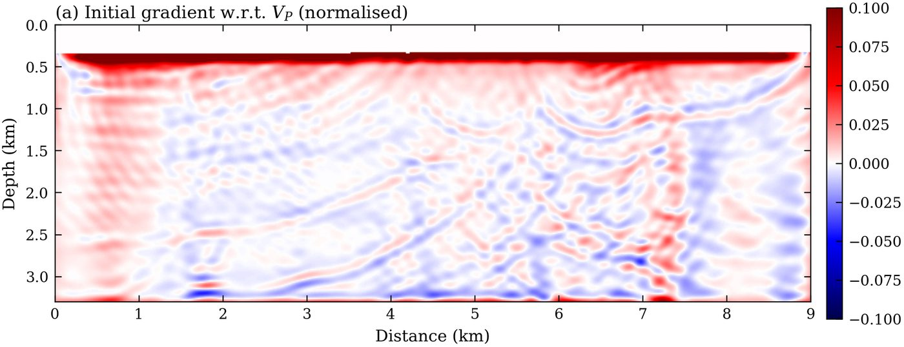

Why the split is load-bearing
It is not decoration — the two halves genuinely cannot share a dependency stack.
devito and the newer jax live in different conda environments in this
workspace, and Devito's adjoint is not JAX-traceable: jax.grad
cannot cross that boundary on its own. Tesseract makes the boundary explicit and typed
instead of implicit in a chain_grad method call.
2
independently implemented gradients, assembled by the chain rule across a process boundary
1.49×
198,401 network weights against 132,821 grid unknowns — an overparameterised reparameterisation
7.80 s
mean per composed loss + gradient over 6000 epochs, one worker per shot
Neither Tesseract knows the other exists. The workflow never sees a wavefield or a weight
matrix — only a flat theta vector going one way and a scalar loss coming back.
Architecture
Forward along the top, vector–Jacobian products back along the bottom.
| siren_model/ | devito_fwi/ | |
|---|---|---|
| forward | vp = vmin + (vmax−vmin)·σ(SIREN([x,z])) |
acoustic FD solve, L2 misfit over all shots |
| gradient | JAX autodiff (jax_recipes) |
discrete adjoint-state (devitofwi) |
| stack | jax, equinox | devito, pylops, a C compiler |
workflow.py composes them and runs jax.value_and_grad plus Optax Adam
over theta. JAX never traces the wave solve — it calls the Devito Tesseract's
vector_jacobian_product endpoint, which is
AcousticWave2D._loss_grad used verbatim.
Why a coordinate network at all
The SIREN is a reparameterisation, not a regulariser bolted on afterwards. Velocity is a
continuous function of position, evaluated on the grid the solver needs; the sigmoid
bounds it into [1.4, 5.8] km/s by construction, so no clipping or projection
step is needed. The water layer is pinned in the forward map, not merely masked in
the gradient — every SIREN weight touches every grid node, so a zeroed grid gradient alone
would not stop the water from drifting.
The problem
The repo defaults, which are exactly the reference script's configuration. The completed run in Results varies two of them — 50 shots and 6000 epochs — and says so.
| Parameter | Value | Note |
|---|---|---|
| Model | Marmousi, 601 × 221 | 15 m grid, 9.0 × 3.3 km |
| Sources | 64 | spread over the full surface, 0.30 km edge margin |
| Receivers | 300 | full surface coverage |
| Record | 3000 × 2 ms = 6 s | 8 Hz Ricker source |
| Space order | 4 | nbl = 20 absorbing cells |
| SIREN | 256 × 4 hidden, ω₀ = 20 | 198,401 weights, seed 0 |
| Bounds | 1.4 – 5.8 km/s | brackets Marmousi's 1.484 – 5.695 |
| Optimiser | Adam, lr 1.5e-4 | 3000 epochs, 50 warmup steps |
| Water layer | vp > 1.52 | masked cells pinned to 1.5 km/s |
The reference script takes vmin/vmax from
vp_true.min()/max() — knowledge of the answer. Here they are stated as
constants instead, which keeps the model Tesseract from loading the true model at all.
The bounds only have to contain the model; a real inversion would set them wider,
from expected geology. They must not be tighter than the truth — a sigmoid saturating
inside the true range could never reach the extremes.
Results
Figures from a live run at the full 601 × 221 configuration.
Marmousi is recovered from a featureless random start, with no multiscale continuation and no starting-model information. Data misfit fell to 0.29 % of its initial value and model error by 81.4 %; velocity RMSE went from 1.0014 → 0.3600 km/s (64 % reduction).
0.29 %
final data misfit Φ/Φ₀ — 1.3799e+04 → 4.0559e+01
0.360
km/s final velocity RMSE, from 1.0014 at the random start
81.4 %
model-error reduction, ‖(m − m_true)/m_true‖₂: 177.4 → 33.0
7.80 s
mean per composed loss + gradient + VJP, n = 6000, 50 workers






Where the time went
| Stage | Time | Share |
|---|---|---|
| imports, setup, SIREN build, worker fork | 10.5 s | 0.0 % |
| FD engine build-up + observed data | 2.8 s | 0.0 % |
| first loss + gradient | 13.5 s | 0.0 % |
| inversion (Adam, 6000 epochs) | 49,937 s | 99.9 % |
| — objective (loss + gradient + VJP) | 46,822 s | 93.7 % |
| — callback (live figures) | 1,724 s | 3.4 % |
| — optimiser overhead | 1,391 s | 2.8 % |
| final gradient, modelling, figures, I/O | 18.1 s | 0.0 % |
| Total wall clock | 49,987 s — 13 h 53 m 07 s | 100 % |
The wave solve dominates completely, as it should: 93.7 % of wall clock is inside the physics
Tesseract. The Tesseract boundary itself — serialising theta out and
dL/dθ back, 6000 times each way — does not appear in the budget.
Caveats worth stating
50 shots and 6000 epochs, not the 64 shots / 3000 epochs that
make run and the reference script use — and the starting model is a calibrated
random SIREN (gain 8.775, σ = 0.300 km/s) rather than a plain random draw. Everything else
is as documented above.
Over the final 500 epochs the misfit moved 7 % and the model error 0.58 %. The run was stopped at its epoch budget, not at a convergence criterion — more epochs would buy little at this frequency without multiscale continuation.
All 16 checks in test_pipeline.py pass on a decimated Marmousi used during
development: the composed gradient against finite differences to ~1 %, the Devito adjoint
to 2e-5 – 4e-4 per cell, and the fully containerised --served path returning an
identical gradient. Those are properties of the code, not of the grid — but they have not
been re-run at full size, where make test costs a wave solve per check.
Verifying the composed gradient
The check that both VJPs are correct and consistent with each other.
--check-grad finite-differences the composed forward map and
compares it against the composed adjoint. It only passes if both halves are right:
-grad: adjoint +3.081590e-05 finite-diff +3.115019e-05 rel.err 1.07e-02 OKThe assertion is on the gradient direction — the one Adam steps along, and the best conditioned. Random directions in 8577-dimensional space are nearly orthogonal to the gradient (they see ~1% of its norm), so their finite differences are dominated by second-order terms of the other components; they are printed for information but not asserted on. Verified separately, single-cell perturbations of the Devito VJP agree to 2e-5 – 4e-4.
PostProcessVP carries one local change relative to Devito-fwi upstream:
−grad/vp³ → −2·grad/vp³. Devito returns
dL/dm for the squared slowness m = 1/vp², so the chain rule to
velocity is dL/dm · (−2/vp³) — the factor of 2 belongs there. The gradient
check depends on it: with the upstream expression the adjoint is off by exactly 2×.
Worth sending upstream.
Running as containers
The in-process mode keeps the demo to one command; container mode is what actually delivers the isolation.
make build # or: tesseract build siren_model/ && ... devito_fwi/
tesseract serve siren-model # note the port
tesseract serve devito-fwi # note this one too
$PY workflow.py --served http://127.0.0.1:PORT1 http://127.0.0.1:PORT2
tesseract teardown <name> # names printed by serve, or `tesseract ps`
workflow.py is unchanged between the two modes — only how the
clients are constructed differs, which is the point of the abstraction.
The Tesseract CLI shells out to docker. On a box with rootless podman and no
docker binary, builds need a shim — the Makefile puts
~/.local/bin on PATH for the build targets:
printf '#!/bin/sh\nexec podman "$@"\n' > ~/.local/bin/docker && chmod +x ~/.local/bin/dockerOutputs
The same file set, figures and timing report as the monolithic reference script — only the gradient path differs, which makes the two directly comparable.
| File | What it is |
|---|---|
SirenInit.png | true model + random initial model |
Data.png | observed shot gathers |
Gradient.png | first gradient w.r.t. Vp |
InvertedVP.png | true / random-initial / inverted, one shared colorbar |
Profiles.png | vertical Vp profiles at three distances |
Waveform.png | observed vs modelled waveforms |
Loss.png | convergence — data misfit + model error |
*tmp.png | live diagnostics, refreshed every --fig-every |
snapshots.npy | movie frames |
inversion.mp4 | those frames rendered — the animation above |
result.npz | models, weights, histories, timings |
timing.txt | the timing report printed at the end |
code/ | verbatim copy of the sources that produced the run |
Throttles: --fig-every (live figures), --wiggle-every /
--wiggle-shot / --wiggle-tmax (live waveforms),
--snap-every (movie frames), --no-figures to skip all of it.
Implementation notes
The things that were not obvious.
JAX_PLATFORMS=cpu
Set inside siren_model/tesseract_api.py. The coordinate network is a few
thousand weights — a GPU buys nothing, costs a transfer per call, and on a shared box
competes with whatever else is resident.
jax_enable_x64
Enabled in the workflow: the FWI Tesseract returns a float64 loss.
The pool is warmed once
devito_fwi forks one worker per shot on the first call and reuses them, so
Devito's JIT compilation and the observed-data modelling are paid once per served
Tesseract rather than once per gradient.
apply computes the gradient anyway
_loss_grad(computegrad=False) has an upstream bug — it crops an unbound
grad — so the loss-only shortcut is unusable. The forward solve dominates, so
the wasted adjoint is a modest cost rather than a doubling.
Two implicit devito dependencies
matplotlib (imported at module level by waveengine/acoustic.py)
and pytest (devito 4.8.23's bundled examples/seismic/model.py carries
a module-level @pytest.mark.parametrize, making it an import-time
dependency). A missing one kills the forked workers.
theta crosses flat
The ravelled pytree goes over the boundary as a single float32 vector, so the schema is one array rather than a nested list of per-layer matrices. The unravel function is rebuilt from the architecture each call — cheap, and it keeps the Tesseract stateless.
Credits
The FWI engine is not mine.
devitofwi/ is
Devito-fwi by the
Deep Imaging Group at KAUST (lead author Matteo Ravasi), MIT licensed,
vendored here with its LICENSE. Its Devito propagator and hand-written
adjoint-state gradient are the physics Tesseract —
AcousticWave2D._loss_grad is called verbatim as the
vector_jacobian_product; the Tesseract only puts a typed boundary around it.
siren/ is adapted from
KronosAI_solutions
(SIREN, Sitzmann et al. 2020). Full attribution, licences and the one local modification to
Devito-fwi are in THIRD_PARTY.md.
Vendored rather than pip-installed because Devito-fwi is not on PyPI, and in this workspace it was an editable install pointing back at a parent repo — which would have made this folder non-portable.